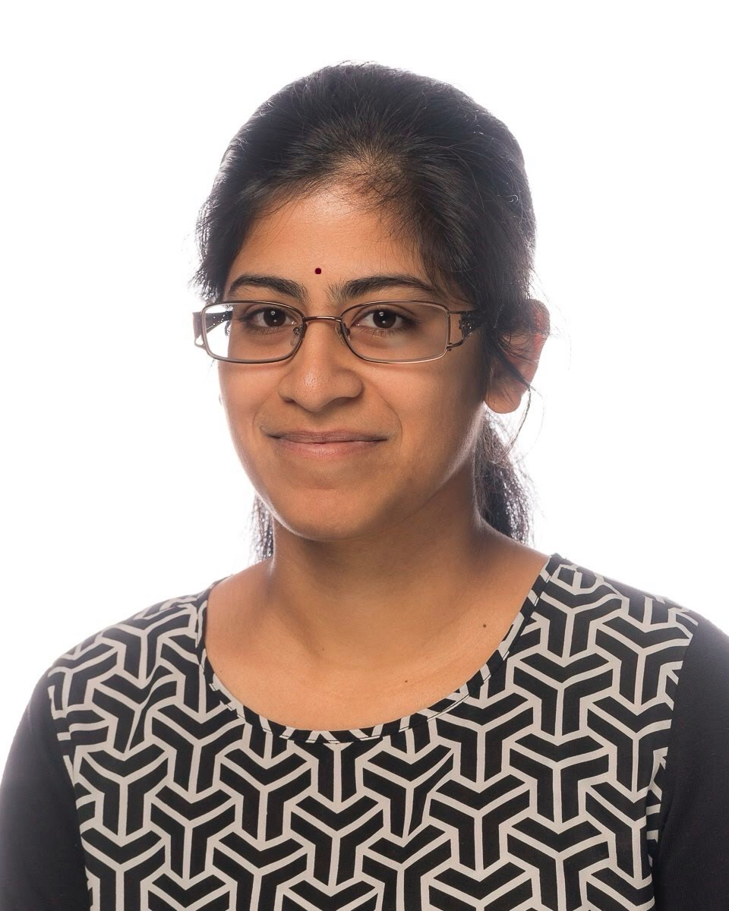
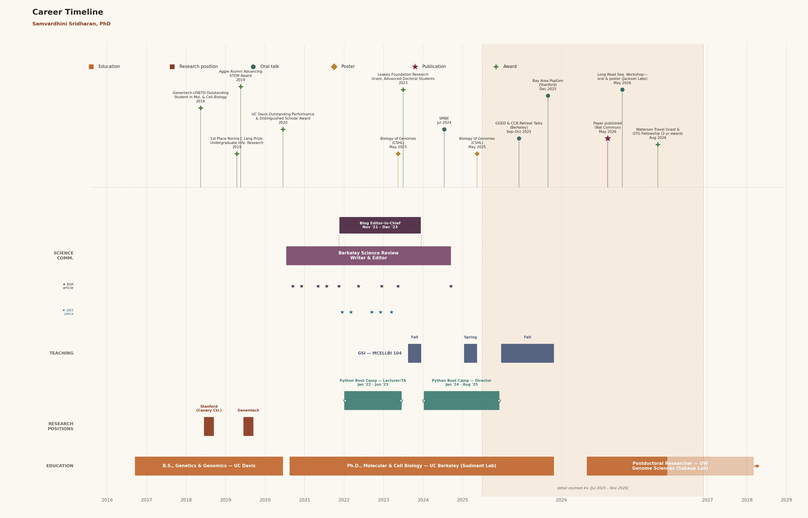

<title>Samvardhini Sridharan, PhD</title>
<meta charset="utf-8">
<meta name="viewport" content="width=device-width, initial-scale=1">
<meta name="description" content="Samvardhini Sridharan, PhD — Postdoctoral Researcher, Sakaue Lab, Department of Genome Sciences, University of Washington School of Medicine.">
<link rel="stylesheet" href="style.css?v=2">

<header class="site-nav">
  <div class="brand">Samvardhini Sridharan</div>
  <nav>
    <ul>
      <li><a href="index.html" class="active">Home</a></li>
      <li><a href="research.html">Research</a></li>
      <li><a href="publications.html">Publications</a></li>
      <li><a href="teaching.html">Teaching</a></li>
      <li><a href="science-communication.html">Science Communication</a></li>
      <li><a href="beyond-the-lab.html">Beyond the Lab</a></li>
      <li><a href="cv.html">CV</a></li>
    </ul>
  </nav>
</header>

<main>
  <div class="hero">
    
    <div>
      <h1>Samvardhini Sridharan, PhD</h1>
      <p class="role">Postdoctoral Researcher, Sakaue Lab &middot; Department of Genome Sciences, University of Washington School of Medicine</p>
      <blockquote class="tagline">I study structural variants, particularly chromosomal inversions, and how we can bring them into genome-wide association studies (GWAS) to better understand human disease risk.</blockquote>
    </div>
  </div>

  <section class="card">
    <p>I am a Postdoctoral Researcher in Dr. Saori Sakaue's lab (<a href="https://saorisakaue.github.io/" target="_blank" rel="noopener">Sakaue Lab</a>) in the Department of Genome Sciences at the University of Washington, School of Medicine, where I am supported as a Postdoctoral Trainee by the <a href="https://www.gs.washington.edu/academics/training-grants/genome-training-grant/" target="_blank" rel="noopener">Genome Training Grant</a>. My research focuses on structural variants &mdash; primarily chromosomal inversions &mdash; and how we can incorporate them into genome-wide association studies (GWAS) to expand what we understand about disease risk.</p>
    <p>I completed my PhD in Molecular and Cell Biology (with a Designated Emphasis in Genomics and Computational Biology) at the University of California, Berkeley, in Dr. Peter Sudmant's lab (<a href="https://www.sudmantlab.org/" target="_blank" rel="noopener">Sudmant Lab</a>). My dissertation, <em>Recurrent Structural Variation and Inversion Haplotype Diversity in Humans and Great Apes</em>, examined structural variation across modern humans, ancient DNA, and great apes. Before my PhD, I was a research intern at Genentech (2019) and at Stanford University's Canary Center for Early Cancer Detection (2018). I hold a B.S. in Genetics and Genomics from the University of California, Davis, with minors in Statistics and Professional Writing.</p>
  </section>

  <section class="card">
    <h2>Updates</h2>
    <ul class="news-list">
      <li><span class="news-date">Aug 2026</span> Awarded funding from the Genome Training Grant, supporting my postdoctoral research.</li>
      <li><span class="news-date">Aug 2026</span> Received the Waterston Travel Award from the UW Department of Genome Sciences.</li>
      <li><span class="news-date">May 2026</span> Published "<a href="https://www.nature.com/articles/s41467-026-73174-1" target="_blank" rel="noopener">Recurrent structural variation and recent turnover at the 17q21.31 locus in humans and great apes</a>" in <em>Nature Communications</em>.</li>
    </ul>
    <details class="news-more">
      <summary>Show more</summary>
      <ul class="news-list">
        <li><span class="news-date">May 2026</span> Attended commencement at UC Berkeley.</li>
        <li><span class="news-date">Mar 2026</span> Began my postdoctoral research in the Sakaue Lab at the University of Washington.</li>
        <li><span class="news-date">Dec 2025</span> Graduated from UC Berkeley with a PhD in Molecular and Cell Biology.</li>
        <li><span class="news-date">May 2023</span> Awarded a grant from the Leakey Foundation for research on structural variation and human evolutionary origins, focused on the 17q21.31 inversion locus across humans and non-human primates.</li>
        <li><span class="news-date">May 2022</span> Passed my qualifying exam.</li>
        <li><span class="news-date">Aug 2020</span> Began my PhD at UC Berkeley.</li>
      </ul>
    </details>
  </section>

  <section class="card">
    <h2>Career Timeline</h2>
    <div class="timeline-wrap">
      <a href="career_timeline.jpg" target="_blank" rel="noopener" aria-label="Open career timeline full size in a new tab">
        
      </a>
    </div>
  </section>

  <div class="contact-links">
    <a href="mailto:ss242@uw.edu">Email</a>
    <a href="https://scholar.google.com/citations?user=8Fi83kYAAAAJ&hl=en" target="_blank" rel="noopener">Google Scholar</a>
    <a href="https://www.linkedin.com/in/samvardhini/" target="_blank" rel="noopener">LinkedIn</a>
  </div>
</main>

<footer class="site-footer">
  &copy; <span id="year"></span> Samvardhini Sridharan
</footer>
<script>document.getElementById("year").textContent = new Date().getFullYear();</script>
